Tosashimizu, Kochi: things to do, food and stays
Tosashimizu · Kochi
Tosashimizu
Highlighted on the Kochi map.
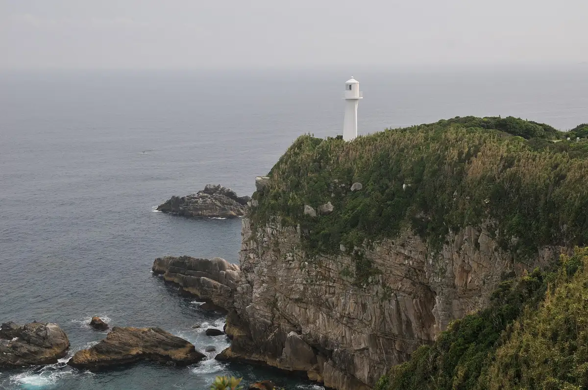
Stay
TheMana Village
TheMana Village
Inn in Ashizurimisaki, Tosashimizu with scenic views.
ホテル しみず
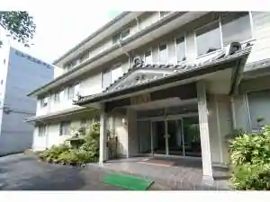
Hotel Shimizu
Hotel in Asahi, Tosashimizu with Wi-Fi and parking.
あしずり温泉郷 足摺サニーサイドホテル
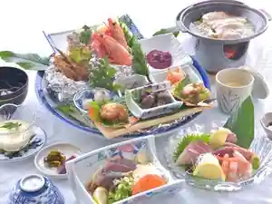
Ashizuri Onsen Sato Ashizuri Sanisaido Hotel
Hotel at Ashizuri Onsen in Matsuo, Tosashimizu.
民宿 いさりび
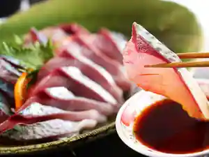
Minshuku Isaribi
アシズリテルメ
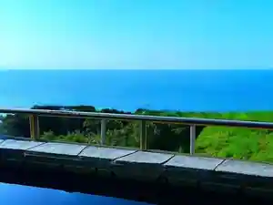
Ashizuriterume
Inn in Ashizurimisaki, Tosashimizu with a sauna.
【絶景温泉】星空と海の宿 足摺国際ホテル
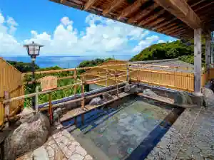
(Zekkei Onsen) Hoshizora To Umi No Yado Ashizuri Kokusai Hotel
Hotel at Zekkei Onsen in Ashizurimisaki, Tosashimizu with scenic views.
Ocean View シーサイドInn福山
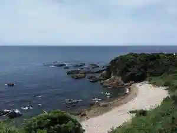
Ocean View Shisaido Inn Fukuyama
ホテルオレンジ
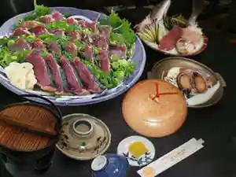
Hotel Orenji
スノーピーク土佐清水キャンプフィールド
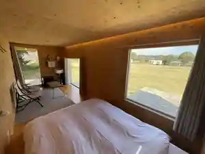
Sunopiku Tosashimizu Kyanpufirudo
Campground lodging in Misaki, Tosashimizu with Wi-Fi.
Dining
Azzurrissimo
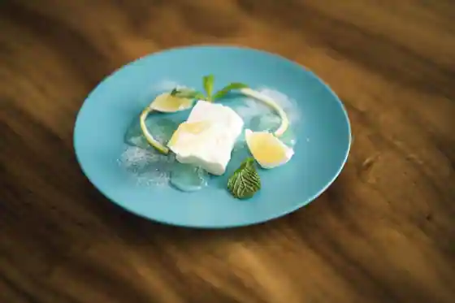
Azzurrissimo
御食事処 あしずり
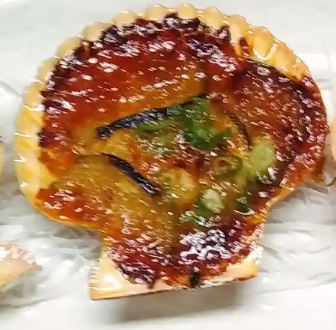
Mike Koto Tokoro Ashizuri
足摺国際ホテル
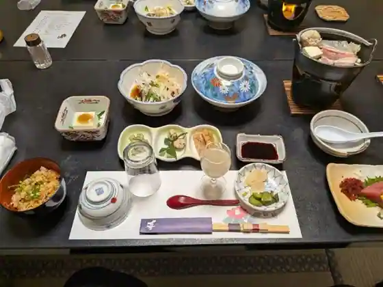
Ashizuri Kokusai Hotel
レストラン つばき
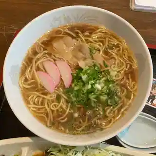
Restaurant Tsubaki
にしむら
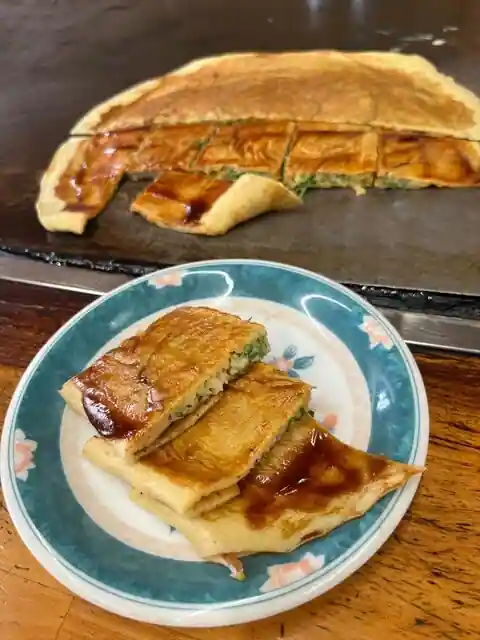
Nishimura
龍屋
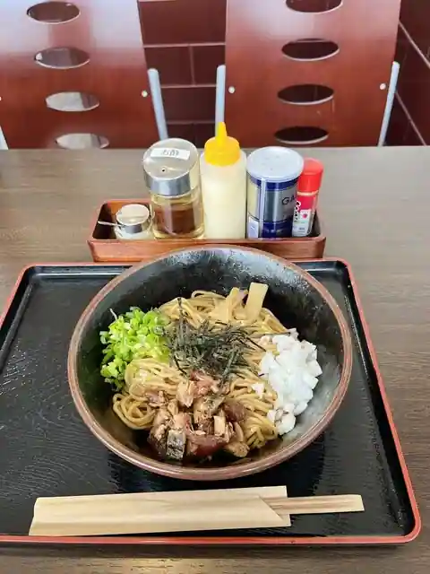
Ryu Ya
鮮魚 一八
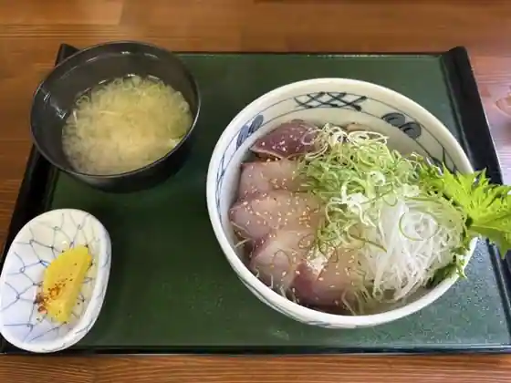
Sengyo Ichihatsu
ホテル足摺園
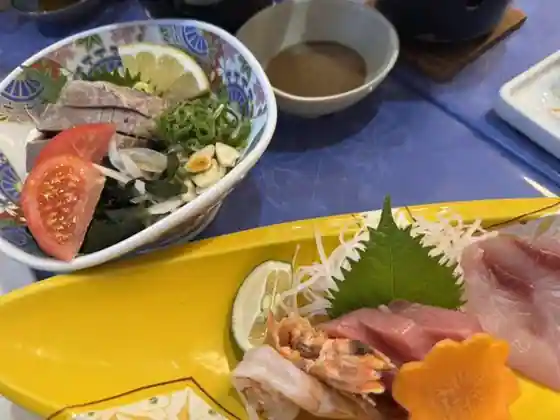
Hotel Ashizuri Sono
足摺サニーサイドホテル
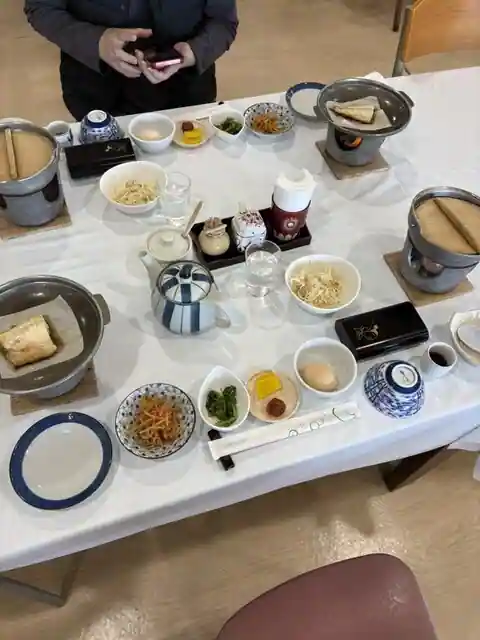
Ashizuri Sanisaido Hotel
ポミエ
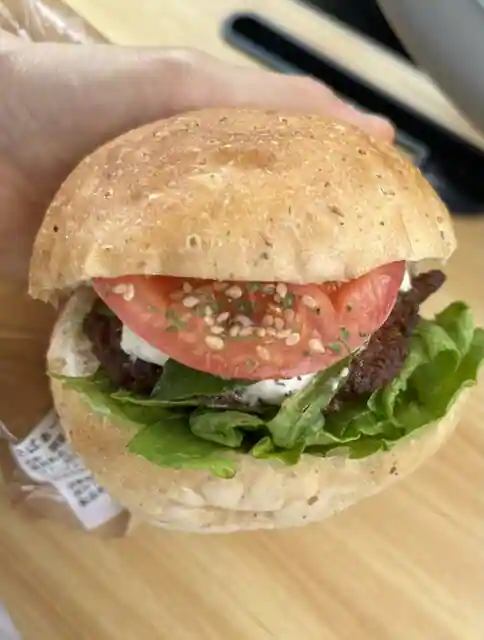
Pomie
鮮魚介料理 お川
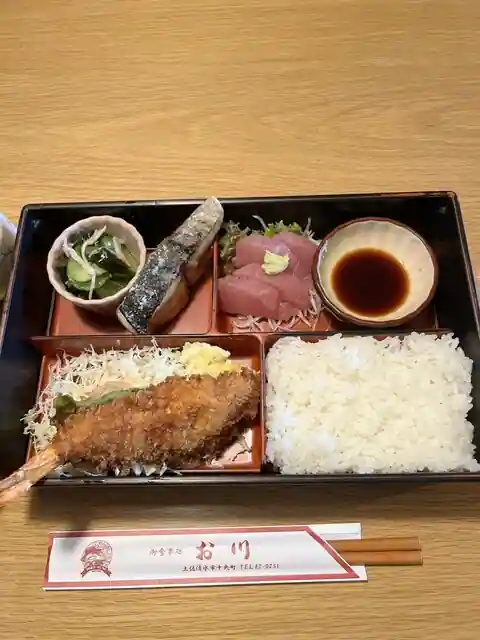
Sengyo Suke Ryori O Kawa
ケープ
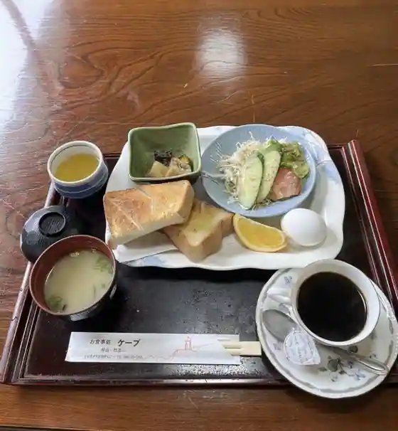
Kepu
魚田
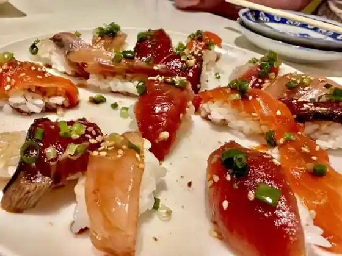
Gyoden
宗田節カフェ
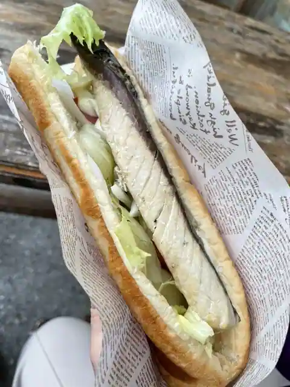
Muneda Fushi Cafe
Sea Dining
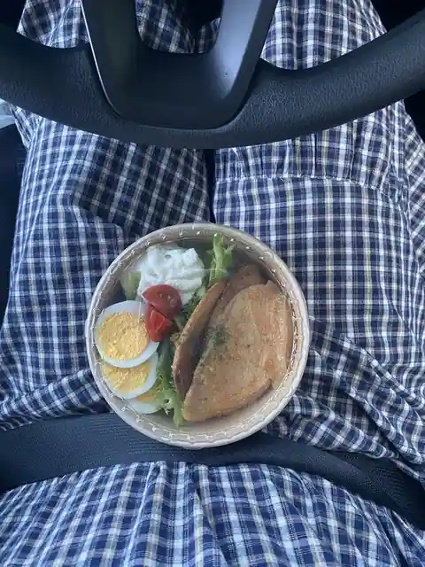
Sea Dining
北京
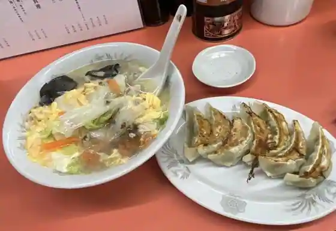
Pekin
足摺グランドレスト
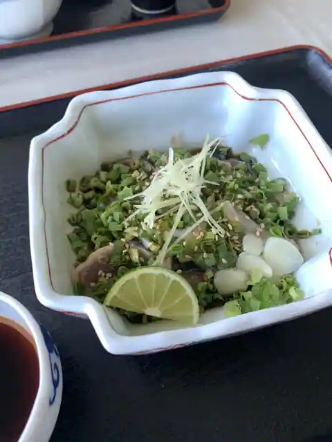
Ashizuri Grand Resuto
お好み焼き タッチ
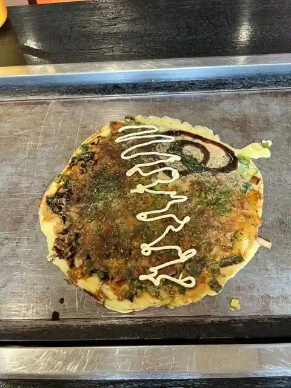
O Konomi Yaki Tatchi
トップ
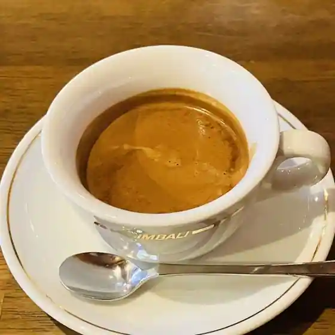
Toppu
カフェ・ダイニング Luce
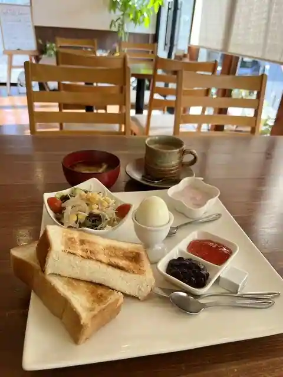
Cafe Dining Luce
台湾料理 豊源
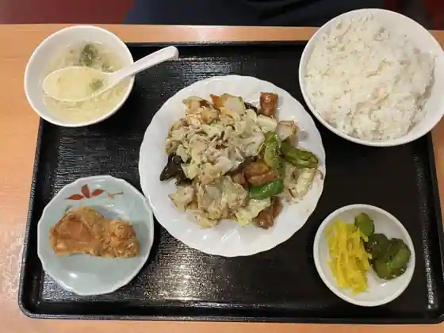
Taiwan Ryori Yutaka Gen
Sights
Ashizurimisaki
Ashizurimisaki Lighthouse
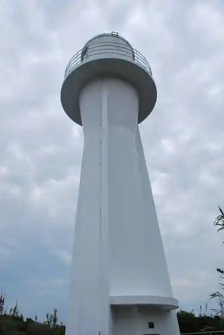
Kongo Fuku Tera
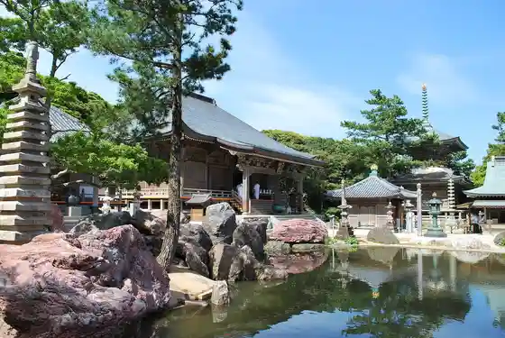
Tatsukushi
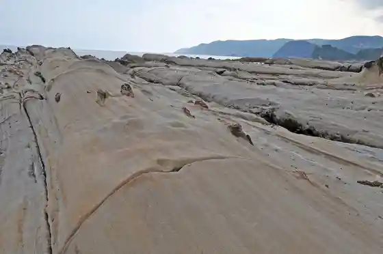
Hakusan Domon
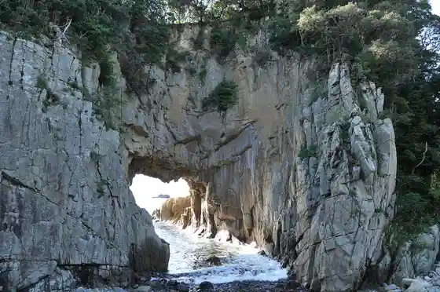
Dai Shi no Hama